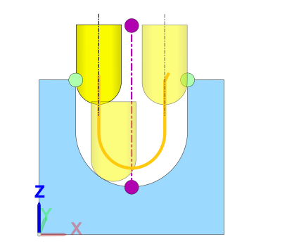
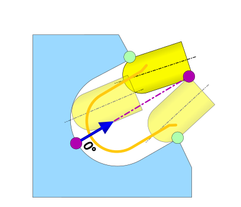
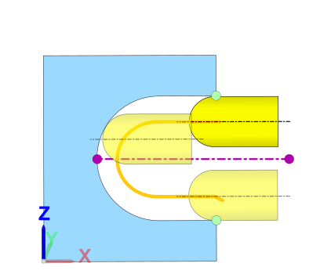
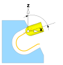

5 Axes
Tilt strategy
|

|
Prefer vertical: Tilt strategy for milling tools and moulds with demolding in the Z direction. For slight undercuts, the machining can perform a 4X or 5X movement locally. This can be suppressed using the Tip check tolerance (see the Setup dialog page). |
|

|
Toward top curve: The tool axis is tilted at the specified angle in the direction of the upper curve. The connection line between the upper and lower curve corresponds to 0 degrees. |
|

|
Radial Z: The tool axis is aligned with the specified angle to the Z axis of the frame. If the Fixed tilt option is activated, the swivel axis remains unchanged during collision avoidance. When the Always radial option is selected, the tool axis is always aligned radially to the Z axis of the frame. |
Desired tilt angle: Slope angle of the tool to be maintained laterally to the infeed direction of the tool.
Tilt angle
Max. tilt angle: Maximum permissible angle of the tool to the Z axis of the frame used.
|  |